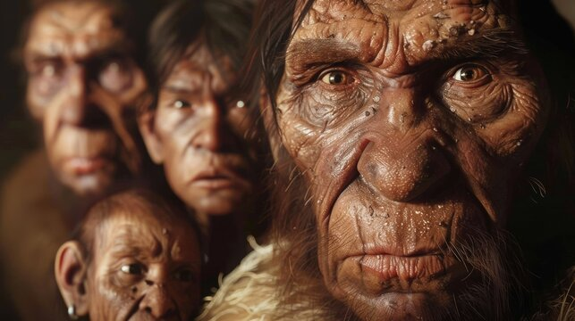
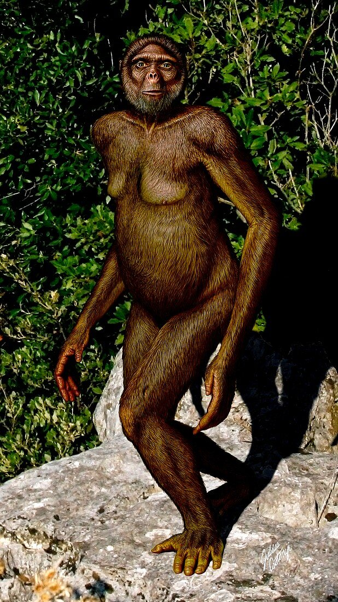

Os hominídeos são muito mais do que apenas ancestrais distantes. Eles são uma parte essencial da nossa jornada evolutiva. Esses ancestrais distantes têm uma história fascinante e são fundamentais para entender a evolução humana.
Vamos explorar um pouco mais sobre eles:
o Os hominídeos são caracterizados por sua postura ereta, o que lhes permite andar sobre duas pernas. Essa transição para a locomoção bípede foi um marco importante em nossa evolução.
Além disso, eles possuem um cérebro grande em comparação com outros primatas, o que está associado ao desenvolvimento de habilidades cognitivas avançadas.
A capacidade de uso de ferramentas também é uma característica marcante dos hominídeos. Desde o Homo habilis, que fabricava ferramentas de pedra, até os Neandertais, que demonstravam uma compreensão complexa do mundo ao seu redor, essa habilidade moldou nossa trajetória como espécie.
As principais classes de hominídeos:
Ardipithecus ramidus:
O Ardipithecus ramidus é uma espécie que viveu há cerca de 4,4 milhões de anos. Ele é considerado um dos primeiros hominídeos a se afastar das árvores e adotar uma postura mais ereta.
Australopithecus afarensis:
O famoso Australopithecus afarensis é conhecido principalmente pelo fóssil da “Lucy”. Essa espécie viveu há aproximadamente 3,9 a 2,9 milhões de anos. Eles tinham uma postura bípede, mas ainda passavam bastante tempo nas árvores.

Homo erectus:
O Homo erectus é uma espécie que existiu entre 1,9 milhão e 143 mil anos atrás. Eles eram habilidosos na fabricação de ferramentas e foram os primeiros hominídeos a se espalhar para fora da África.

Homo neanderthalensis (Neandertais):
Os Neandertais viveram na Europa e na Ásia entre 400 mil e 40 mil anos atrás. Eles tinham uma estrutura robusta e uma cultura complexa, incluindo o uso de ferramentas e rituais funerários.

Homo sapiens (Nós!):
O Homo sapiens, ou ser humano moderno, é a única espécie de hominídeo que sobrevive até hoje. Nossa história remonta a cerca de 300 mil anos atrás na África.

Além dessas espécies, também temos outras menos conhecidas, como o Homo naledi e o Homo floresiensis. Cada uma dessas classes de hominídeos contribuiu para a incrível jornada evolutiva que nos trouxe até aqui.